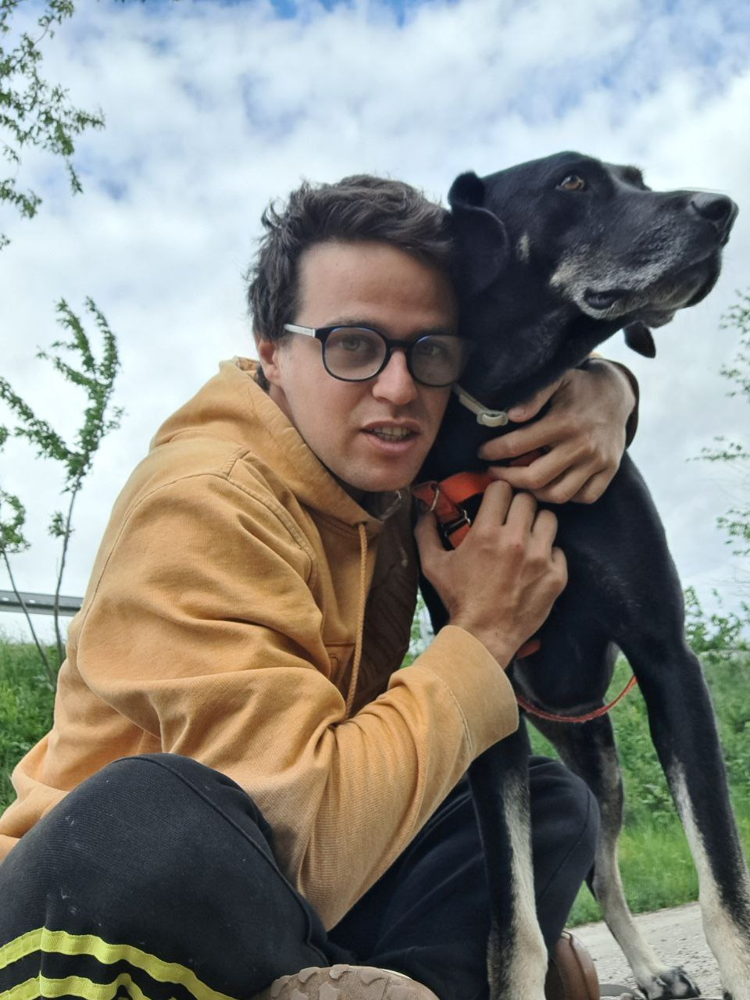

About me

Hi, my name is Salvador Alves, aka therightman.
I live in Estoril, Portugal.
I like to program. I like to read. And I like a lot more things 🏄♂️🛹🏂🌳🧑🍳🎮🐶🐮
I'm also a software engineer.
Now
At the moment I am
- Working at Salsify
- Taking care of Ollie
- Playing some Overwatch
- Working on things like AjudaOsAnimais and SapatosVegan
Updated August 2026
Experience
I've worked at Aptoide and at Codacy. Both were very positive experiences.
I started programming when I was 17 and created DevChannel. It was, for a couple of years, a very fun community of people learning more about programming (now mostly inactive).
I studied Computer Science at Instituto Superior Técnico.
Some technologies I have experience with
- Python
- Golang
- Linux
- And many more. I am generally willing to learn about anything that piques my interest and I've used a lot of programming languages and tools.
If you want to get to know me send me an email at therightmandev@gmail.com